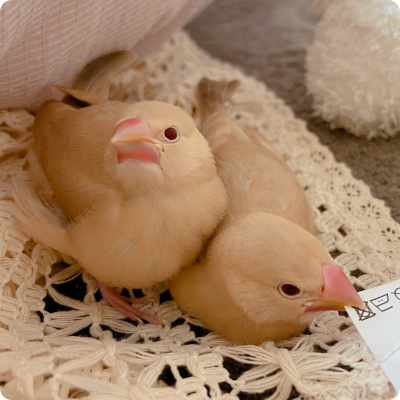
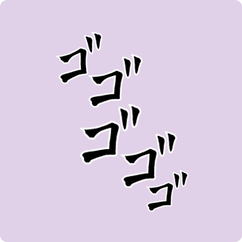
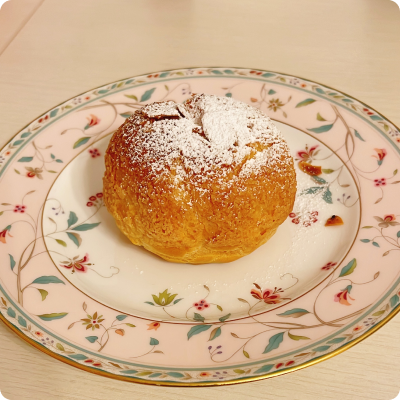
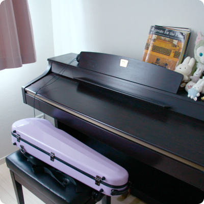

MY JOURNEY
デザイナーを目指すまで
大学時代
︎「せっかくの大学生活、何か新しいことにチャレンジしたい！」と考え、元々好きだった花に関わる仕事をしようとフラワーショップでアルバイトを始める。
ある日、売れ残っていた単品の花を見て、「このままでは誰にも選ばれないでロスになる。何か工夫できないか？」と考えた。
そこで、他の花と組み合わせてオリジナルのブーケを作ってみたところ、予想以上の反響(その日中に完売！)があり、それをきっかけに、オリジナルブーケの制作を任されることに。
価格帯の設定、花の組み合わせ、値付け、プライスカードのデザインまで、すべてを自分の頭で考えつつ１から自分の手で作り上げていく中で、「創意工夫で価値を生み出すことの面白さ」 を実感。
「どう魅せるか」「どう伝えるか」次第で、同じものでも価値が変わる。
この経験が、後のデザインへの興味へと繋がっていった。
社会人
大学卒業後、フラワーショップの仕事をさらに突き詰めたいと考え、都心の中型店舗へ異動し、サブマネージャーとして勤務。
今までの仕事に加え、ディスプレイやスタッフ指導、膨大な数のオーダーメイド制作など密度の高い時間を過ごすと共に、やりたいことをひと通り経験したと感じ、今後の働き方について考え始める。
そこから「資格取得等を通し、着実に成長できる環境」であることを軸に会計事務所へ転職。
実務を通し学びを深めていったが、やはり自由な発想や表現を活かせる仕事がしたいという気持ちが強く募るようになる。
そこで模索する中で、Webデザイナーという職業に出会う。
現在
2024年5月から3か月間、職業訓練にてWEBデザイン(主にコーディング)を学ぶ。
その後、Udemyや書籍等を活用しながら独学にて勉強を続け、デザイン・コーディングの理解を深めつつ、自主制作に取り組む。
現在は、これまで積み重ねてきた学びや制作を形にし、WEBデザイナーとしてのキャリアをスタートさせるために就職活動を進行中。
Things I like
好きなもの・こと
-
 鳥
鳥全般が好きで、文鳥3羽を飼っています。 いつか猛禽類を飼うのが夢です。
-
 ジョジョの奇妙な冒険
独特な世界観に魅了され、つい日常でもセリフが出そうになります。熱い頭脳戦と、センス全開の演出がたまりません。
-
 お菓子作り
気分転換にお菓子作りをすることが多いです。 甘い香りに癒されます。
-
 楽器
ピアノとバイオリンを弾きます。音に没頭する時間が好きで、気づけば何時間も経っていることがあります。